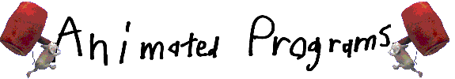

|
 Guia do revisor do ToonTalkPreparado por: Bem-vindo ao guia do revisor do ToonTalk da Animated Programs. O ToonTalk é um programa de computador educacional que permite às crianças aprender e, ao mesmo tempo, desenvolver habilidades de programação em computadores. Com o ToonTalk você poderá criar programas de computadores e ver as animações de suas criações sendo executadas. O ToonTalk foi especialmente desenvolvido para permitir que crianças de diferentes idades, talentos e estilos aprendam algo sobre programação. Uma criança pode ser apresentada ao ToonTalk de três maneiras: jogando o Desafio, assistindo às exemplonstrações narradas ou simplesmente jogando. Cada um dos modos permite um estilo diferente de aprendizado. As crianças são estimuladas a experimentar todos os três e alternar freqüentemente entre eles. Este guia oferece apenas um caminho possível dentre as várias opções. Recomendamos que você teste o
ToonTalk, se possível, junto com uma criança. Insira o CD-ROM ToonTalk e espere até que o ícone do botão "Instalar" apareça. Se ele não aparecer dentro de um minuto, abra a pasta CD-ROM e dê um clique duplo no ícone chamado "Clique-me". (Ou, se preferir, execute d:\clique-me.exe, onde "d" é sua unidade de CD-ROM.) Quando o programa de instalação for iniciado, ele exibirá uma janela com três opções: Típica, Compacta ou Personalizada. Recomendamos que você escolha a opção "Personalizado" e deixe todos os itens selecionados, caso possua mais de 150 MB de espaço livre em disco. Seu disco rígido voltará a ter o espaço que tinha anteriormente quando você desinstalar o ToonTalk. Caso não possua muito espaço livre, escolha a opção "Típica". Caso tenha algum tipo de problema durante a instalação do ToonTalk, por favor, entre em contato com nosso suporte técnico 3154-0305. 2. Iniciando: Quando você clicar no ícone
3. Sobre os Desafios: Para iniciar o ToonTalk, escolha "Jogar" e digite seu nome. O ToonTalk mantém um modelo de usuário, podendo apresentar-se para você de maneiras diferentes, dependendo da atividade que você tenha realizado anteriormente no ToonTalk. Escolha sua aparência (você pode optar por ter cabelos compridos, um chapéu ou ser careca) e você verá o ToonTalk abrindo uma tela. Clique com o botão do mouse para avançar a tela de créditos e clique novamente para ir à próxima tela. Agora você verá um texto resumido apresentando o objetivo do jogo. A história explica por que Márcio, o Marciano, sabe tudo, mas não pode fazer absolutamente nada por ele. Você precisará fazer as coisas sozinho, mas pode recorrer ao Márcio para ter auxílio verbal. Ao término da introdução, você perceberá que está em frente a um foguete que sofreu uma explosão, com um vizinho. No início isto é tudo o que você verá. Se você tentar entrar na casa perceberá que a porta está fechada. Se você passar pela porta do foguete, Márcio irá recepcioná-lo. No Desafio, você interage com Márcio entrando em sua nave e ouvindo sua explicação sobre o que ele precisa no momento, ou ouvirá ele perguntar por que você não trouxe o que ele precisava, receberá um pequeno conselho sobre como proceder, ou os cumprimentos, caso tenha trazido o que ele estava esperando. Se quiser, ele pode lhe dar a próxima dica, seja caminhando ao lado dele ou saindo do foguete e retornando. O Desafio consiste em mais de 60 conjuntos em 5 níveis. Recomendamos que você tente resolver pelo menos os nove primeiros desafios. Depois de ouvir o que Márcio precisa, você deve entrar na casa e clicar com o botão do seu mouse para sentar-se. Para solucionar o Desafio, segure (com um clique do mouse) o objeto desejado e pressione ‘Esc’ para levantar-se. Você colocará o objeto automaticamente em seu bolso. Caminhe de volta até o Márcio. Caso precise de ajuda, você pode caminhar de volta ao Márcio com o bolso vazio. Desafio n° 1 – Márcio precisa de uma caixa com 1 e 2 dentro dela. Isso introduz as caixas e números do ToonTalk. Entre na casa e clique com o botão do mouse para sentar-se. Posicione sua mão sobre o 1, clique com o botão do mouse para segurar o 1, mova-o até o buraco esquerdo da caixa e clique com o botão do mouse para soltá-lo dentro do primeiro buraco. Em seguida, pegue o 2 e solte-o dentro do segundo buraco. Depois arraste a caixa inteira, pressione a tecla ‘Esc’ para levantar-se, caminhe até a porta e retorne ao Márcio. Desafio n° 2 – Márcio precisa de um 4. Este Desafio introduz Bambam o Rato, que faz cálculos aritméticos e outras operações básicas. Caminhe novamente para dentro da casa e clique com o botão do mouse para sentar-se novamente. Pegue um 2 e solte-o em cima do outro 2. Espere até que Bambam combine-os. Pegue o 4, pressione ‘Esc’ para levantar-se e caminhe de volta até o Márcio. Desafio n° 3 – Márcio precisa de uma caixa com 8, 16 e 32 dentro. Isto introduz uma maneira de combinar caixas para criar outras maiores. Solte o 16 sobre um outro que está em uma caixa. Em seguida, solte a caixa com 8 no lado esquerdo daquela que contém 16. Certifique-se de que eles se sobrepõem apenas um pouco. Depois, solte a caixa com 32 no lado direito da outra caixa. Assim como em todos esses desafios, se você cometer um erro, poderá pegar a bomba e pressionar a barra de espaço para iniciar o Desafio novamente. Desafio n° 4 – Márcio precisa de um número maior que 1.000. Este Desafio introduz a Varinha Mágica do ToonTalk, que é usada para copiar objetos do ToonTalk. Pegue a vara, aponte sua ponta para o 1 e pressione a barra de espaço para copiar o 1. Solte o 1 sobre o 1 original pressionando a barra de espaço. Copie o 2 e solte-o sobre o 2. Continue fazendo isso até que a varinha pare de realizar sua magia. O resultado deverá ser exatamente 1.024. Desafio n° 5 – Márcio precisa de um zero. Este Desafio introduz Asper o Aspirador. Pegue o Asper, ligue-o pressionando a barra de espaço e mova-o por todas as partes do chão. Pressione a barra de espaço novamente assim que você vir uma almofada com o número 0 nela. Pegue o 0 e traga-o para o Márcio. Desafio n° 6 – Márcio precisa de um –1. Aponte o botão do Asper, espere até que ele comece a se agitar e, em seguida, clique com o botão do mouse. O botão do Asper precisa, agora, estar exibindo um R ao contrário. Aponte para qualquer outra parte do Asper, clique novamente para pegá-lo e, em seguida, pressione a barra de espaço para ligá-lo. Quando você o vir expelindo o '-1', pressione a barra de espaço novamente para desligá-lo. Em seguida, pegue o -1 e leve-o para o Márcio. Desafio n° 7 – Márcio precisa de uma almofada com um número em branco. Pressione o botão do Asper até que exiba um I para apagar. Aponte para uma parte diferente do Asper e clique com o botão do mouse para pegá-lo. Posicione o Asper sobre o número, pressione a barra de espaço e, em seguida, coloque o Asper em cima. Por fim, pegue um número em branco e leve-o para o Márcio. Desafio n° 8 – Márcio precisa de uma caixa com dois zeros. Pegue a caixa e solte-a sobre o robô. Você entrará nos pensamentos do robô. Em seguida, treine o robô para que ele copie a caixa apontando a Varinha para a caixa inteira e pressionando a barra de espaço. Solte a cópia próximo à caixa. Certifique-se de que elas se sobrepõem apenas um pouco. Você automaticamente deixará os pensamentos do robô. Depois, dê a caixa ao robô treinado e espere até que ele copie e una as caixas. Pegue a caixa e leve-a de volta ao Márcio. Desafio n° 9 – Márcio precisa de um número maior que um bilhão. Dê a caixa ao robô. Posicione a Varinha Mágica sobre o 1 até que ele comece a se agitar e, em seguida, pressione a barra de espaço para copiá-lo. Solte a cópia sobre o 1 para dobrá-lo. Você automaticamente deixará o balão de pensamentos do robô. Pegue a caixa e solte-a sobre o novo robô treinado. Ele irá parar depois de dobrar o número. Asper será executado em sua mão. Solte-o e clique com o botão do mouse até que o botão em seu nariz exiba o 'I' para apagar. Em seguida, mova sua boca até o 1 no balão de pensamento do robô. Pressione a barra de espaço para ligá-lo. Solte o Asper e dê a caixa ao robô novamente. Espere até que ele pare, pegue o número na caixa e leve-o de volta para o Márcio. O que se aprende: "Nos Bastidores dos Desafio dos ToonTalk" descreve os conceitos de programação que são aprendidos à medida que o jogador soluciona os desafios. Resumidamente, esses primeiros desafios introduzem as estruturas de dados, os tipos de dados, as operações com dados, a técnica de duplicação pela cópia e a construção e o teste do programa. Os próximos nove desafios do primeiro nível introduzem as estruturas de dados recursivos, a construção de estruturas de dados incrementais e aritmética binária. O próximo nível apresenta os caracteres e as strings de texto e como manipular letras e números. O objetivo do terceiro, do quarto e do quinto nível é consertar o relógio do navio. A realização dessa tarefa requer conversões de computação entre diferentes unidades de tempo, utilizar sensores para medir a passagem das horas, utilizar caminhões para gerar novos processos computacionais, utilizar pombos e ninhos para a comunicação e sincronização entre computações independentes e usar escalas para expressar disparidades para expressar programas com iterações mais flexíveis. 4. Vendo os Exemplos: Se você clicar em ‘Ver os exemplos’ depois de iniciar o ToonTalk, verá uma seleção de oito exemplos. Recomendamos que você assista pelo menos ao primeiro, chamado ‘Tour Introdutório’, que dura aproximadamente 15 minutos. Com o passar do tempo você desejará ver alguns dos outros exemplos.
5. Tornando-se Criativo com o Jogo Livre: Se você selecionar ‘Jogo Livre’ depois de iniciar o ToonTalk, notará que em segundos estará dentro de um helicóptero. Mantenha o botão esquerdo do mouse pressionado até aterrissar perto de uma casa. Você verá que Porta-Treco a Caixa de Ferramentas, está acompanhando-o pelo lugar. Quando entrar em uma casa e sentar-se, Porta-Treco abre uma janela e você tem uma seleção completa dos objetos ToonTalk para usar para construir o que você desejar. Você pode explorar a matemática ou a linguagem, pode construir jogos, animações computadorizadas, simulações e muito mais. Márcio está por perto para ajudá-lo. Se você selecionar um item, Márcio sugerirá coisas que você pode realizar com ele e que jamais fez anteriormente. Você também pode pedir ao Márcio que ele lhe forneça "ajuda direta" ativando-o sempre que pressionar a tecla ‘F1’ e, em seguida, pressionando-a novamente e apontando para o item sobre o qual você deseja saber alguma coisa. Para você ter uma noção do que se trata o free play, nós vamos apresentar agora um exemplo simples. Você irá treinar um robô para alterar um número, de modo que ele aumente até alcançar um limite e, em seguida, ele diminua até atingir outro limite. Depois você irá utilizar o robô em uma variedade de contextos. 1. Inicie o ToonTalk e clique em ‘Jogo Livre’. Use seu mouse para estacionar o helicóptero perto de uma casa. Caminhe um pouco e clique com o botão do mouse para sentar-se. Tire as coisas do Porta-Treco para criar uma caixa parecida com esta:
Você pode construir esta caixa posicionando caixas umas próximas das outras (de modo que elas fiquem um pouco sobrepostas) e preenchendo-as com números adequados (você pode usar o teclado para alterar um número para o qual você esteja apontando ou selecionando). As legendas ("Mínimo", "Número" etc.) não são estritamente necessárias, mas podem ser adicionadas apontando-se para o local apropriado e digitando. Se a caixa for grande demais para que você possa vê-la inteira, é possível utilizar a Soprana para reduzir seu tamanho clicando em ‘T’ enquanto mantém a Soprana sobre a caixa. A idéia por trás dessa caixa é que o compartimento chamado "Número" irá alterar cada ciclo por "Alterar" desde que o "Número" seja maior que o "Mínimo" e menor que o "Máximo". 2. Dê esta caixa a um novo robô utilizando a caixa de ferramentas. Treine o robô para que ele pegue uma varinha mágica, aponte para o 1 rotulado como "Alterar" e, em seguida, ele começa a se agitar; pressione a barra de espaço para copiar o número. Mova a varinha de modo que a cópia fique posicionada sobre o 5 e clique com o botão do mouse para soltar o número. Pressione a tecla ‘Esc’ assim que o robô terminar seu trabalho. 3. Depois clique no botão no nariz do Asper até ele exibir ‘I’ para apagar. Posicione o Asper sobre um dos números na caixa no balão de pensamento do robô. Pressione a barra de espaço e mova o Asper para trás e para a frente até que todos os números sejam apagados. Agora seu robô irá trabalhar para todos os números desde que as escalas inclinem para o lado certo. A caixa no balão de pensamento do seu robô agora deve estar parecida com esta:
4. Agora você está pronto para testar seu robô. Pegue a caixa e a dê para ele. Observe-o adicionar ao ‘Número’ até atingir 10. 5. Agora nós precisamos treinar outro robô para inverter o sentido que o número é alterado. Pegue um novo robô e dê uma caixa a ele. Treine esse robô para pegar o número em ‘Alterar’, digite ‘-’ para torná-lo negativo (ou para torná-lo positivo, caso já seja negativo) e coloque o número de volta. Pegue a Varinha Mágica e copie o número ‘Alterar’ e solte a cópia no ‘Número’. Pronto, agora pressione ‘Esc’. 6. Nós estamos prontos para colocar esse robô para trabalhar sempre que o primeiro robô não estiver trabalhando. Uma maneira de fazer isso é apagando os números na novo balão de pensamento do robô antes e também para aspirar as escalas. Esse robô irá querer trabalhar independentemente da quantidade de números que há na caixa que lhe foi dada. Então a caixa do novo balão de pensamento do robô deve ser parecida com esta.
7. Agora você está pronto para criar um time de robôs. Desde que o primeiro robô do time dê o pontapé inicial no trabalho com as caixas, você precisa se certificar de que o seu primeiro novo robô vai atrás do antigo. Para fazer isso, basta soltar o novo robô sobre o anterior. 8. É uma boa prática gravar as coisas no caderno à medida que você trabalha. Encontre uma folha em branco no caderno e solte o time de robôs no lado direito do caderno. Pegue um bloco de texto, digite algum lembrete sobre o que esses robôs fazem (como "Oscilações") e solte o bloco de texto no lado esquerdo do caderno.
9. Agora você pode se divertir com seus robôs. Encontre uma figura do seu gosto na página 2 do caderno. Enquanto seleciona a imagem, pressione ‘g’ para girá-la. A partir de uma explosão, surgirá um caderno de controles remotos para essa figura. Pegue o controle remoto com o nome de ‘Largura’. Remova o número que estava no slot ‘Número’ da sua caixa e solte o controle remoto de largura no seu lugar. Altere o valor de ‘Mínimo’ para 100 e o de ‘Máximno’ para 900. Agora pegue a figura, digite ‘g’ para girá-la, voltando à posição inicial, e solte-a. Pegue uma cópia do seu time de robôs no caderno e dê a caixa a eles. Você deverá ver a largura de sua figura sendo alterada lentamente. O processo é assim lento porque os robôs são lentos quando eles estão assistindo. Agora gire a figura novamente, solte o time de robôs atrás dela e, em seguida, solte a caixa atrás. Gire a figura, voltando à posição inicial, e solte-a no chão. Você notará que ela ficará mais larga, depois mais fina, depois mais larga, e assim sucessivamente. 10. Você pode girar sua figura e ter o robô alterando outros valores, como a posição ou a aparência. Você pode até mesmo ter mais de um time para poder alterar mais de um aspecto da figura de uma vez. Pegue outras figuras, gire-as e adicione seus robôs e as cópias das figuras. Você pode soltar figuras sobre outras figuras para formar uma composição de figuras, onde cada uma delas pode variar de acordo com a maneira que você as controlar. 11. Quando você tiver uma animação que lhe agrade, poderá salvá-la em seu caderno. Você também pode selecionar a figura, pressionar a tecla ‘Pause’ e selecionar ‘Retornar Mais Tarde’. Um applet Java da sua criação deverá aparecer em seu navegador logo em seguida. Parabéns, você acabou de programar sua primeira animação computadorizada com o ToonTalk.
|